3. Scientific color systems that belong with the themes
Decision draft · 9 November 2026 · depends on Part 1 and Part 2
Pre-implementation baseline — rerun pending the slide gate. The measurements and conclusions below describe the theme revisions used in the original experiment, before the approved foundation repairs. All nine upstream themes have since passed the implementation verification gate. These historical numbers do not describe their current UI roles; phase 5 will rerun the experiments after slide consumer adoption.
The nine priority themes should have matching Matplotlib/Seaborn treatments, but a treatment must distinguish plot furniture, emphasis, categories, ordered magnitude and signed divergence. One branded color cycle cannot do all five jobs. The experiments favor cividis/viridis as general ordered-map baselines, selective theme accents for emphasis, and separately selected categorical and diverging palettes. ColorBrewer supplies useful candidates; its name alone does not establish uniformity or suitability on a dark panel.
Atelier remains the first practical implementation candidate. Folio and Nocturne deserve distinct editorial options; Tufte merits a minimal treatment. All five Reading themes receive the same experiments and individual decisions below. The first four Reading dark modes need accent-role repair, and Darkly Reading needs its secondary role repaired, before a plotting package can claim to match a sound paired UI.
This report supplies 18 experimental plot styles and 18 matched figure specimens, rather than changing production defaults. It also records why there is not yet a single approved eight-color category cycle for every mode.
In this review
- The experiment, and what its numbers mean
- Viridis versus rainbow: the warning is visible and measurable
- Do ramps grown from each theme's accent work?
- Diverging scales: evaluate both arms and the meaning of zero
- Category cycles: neither brand aliases nor a familiar name is enough
- Opacity, projection and exports change the answer
- Nine theme decisions, with both modes visible
- What the experimental styles provide
- Reproduce and inspect
- Selection and the next implementation boundary
The experiment, and what its numbers mean
A dedicated Python 3.12 environment includes NumPy, pandas, Matplotlib, Seaborn, Colorspacious and the report/test tools. The checked-in lockfile and experiment manifest record the exact versions; all figures use synthetic data with seed 20261109.
| Experiment | Coverage | Saved evidence |
|---|---|---|
| UI roles | 35 paired themes × 2 modes | 70 role rows |
| Ordered/diverging maps | 25 common maps plus 18 theme-derived ramps; 256 samples each; normal vision plus 3 simulations; diverging arms evaluated separately | 196 profile rows |
| Map proximity to background | 18 theme modes × 26 maps × paper/panel | 936 rows |
| Category cycles | Five cycles at 3/5/8 colors, plus the five UI aliases; 18 modes, 2 surfaces, 4 vision models | 2,304 rows |
| Rendering stress | Category opacity 1.0/0.7/0.4 and illustrative white veil 0.1/0.2 | Columns in the category table |
| Theme integration | Same line, heatmap and signed-residual examples in all 18 modes | Figure pairs below; style settings |
The tests deliberately separate three frequently conflated ideas:
- Monotonicity: does CIELAB lightness L* move in one direction as the value increases? A step against the overall endpoint trend can imply a false increase/decrease in grayscale. Our reversal count counts these individual steps, not curve turning points.
- Lightness linearity: how closely does L* follow a straight line? The reported RMSE is in L* units. A monotonic but curved scale preserves order while giving some ranges more visual weight.
- Perceptual step uniformity: how constant is the distance between adjacent colors in CAM02-UCS? The reported coefficient of variation (CV) is standard deviation divided by mean distance. Lower is more even in this model; it does not by itself prove better interpretation for every task.
We also report total lightness span. A very uniform but narrow span is not interchangeable with a broad scale. These calculations use Colorspacious's standard sRGB viewing assumptions, not a calibrated projector or dark-room appearance model. Numeric comparisons are within this experiment, not universal psychophysical acceptance thresholds. The definitions follow the distinction between map classes and lightness behavior described in the Matplotlib guide.
Viridis versus rainbow: the warning is visible and measurable
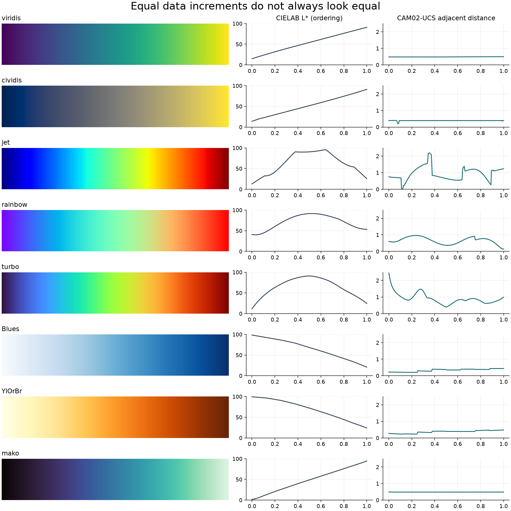
The image uses equal scalar increments. A smooth-looking hue journey is not necessarily a smooth journey in perceived magnitude. Under the normal-vision model, each of the three rainbow-like controls has more than 100 of its 255 adjacent lightness steps opposed to its overall endpoint trend. These are reverse-direction steps, not 100 separate turns in the curve.
| Map | Reverse L* steps | L* linear-fit RMSE | Adjacent-step CV | L* span |
|---|---|---|---|---|
| viridis | 0 | 0.43 | 0.012 | 75.95 |
| cividis | 0 | 0.46 | 0.055 | 77.30 |
| plasma | 0 | 1.51 | 0.010 | 78.94 |
| inferno | 0 | 1.41 | 0.011 | 97.78 |
| magma | 0 | 1.42 | 0.009 | 97.73 |
| mako | 0 | 0.55 | 0.002 | 92.95 |
| rocket | 0 | 1.22 | 0.003 | 92.10 |
| crest | 0 | 0.18 | 0.003 | 54.81 |
| flare | 0 | 0.68 | 0.004 | 54.13 |
| Blues | 0 | 2.74 | 0.243 | 77.49 |
| Greens | 0 | 3.20 | 0.273 | 74.06 |
| Purples | 0 | 2.84 | 0.313 | 80.65 |
| YlOrBr | 0 | 3.25 | 0.220 | 75.19 |
| YlGnBu | 0 | 3.64 | 0.267 | 85.70 |
| Greys | 0 | 4.39 | 0.465 | 100.00 |
| cubehelix | 0 | 2.75 | 0.337 | 100.00 |
| jet | 108 | 24.12 | 0.429 | 82.98 |
| rainbow | 130 | 16.01 | 0.311 | 51.43 |
| turbo | 129 | 21.70 | 0.359 | 78.91 |
ColorBrewer's sequential maps tested here preserve lightness order, but their continuous interpolations have less even adjacent steps than the perceptually designed baselines. This is a reason to distinguish ordered from uniform, not to discard ColorBrewer. Its discrete schemes and explicit sequential/diverging/qualitative classes remain valuable when matching the map to the data's meaning. See the ColorBrewer scheme guide.
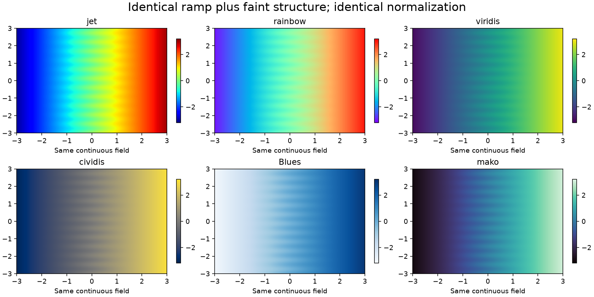
Every panel uses the same scalar field and normalization. Rainbow-like maps introduce conspicuous bands that the field itself does not contain. This is the kind of unequal visual emphasis Schwabish warns about on printed p. 47. Our continuous-map recommendation is an experimental extension of that warning; his sidebar itself favors discrete colors. Genuine thresholds should be shown as explicit classes or contours with a stated rationale, not accidental hue boundaries. Turbo is therefore not accepted as a general ordered-data repair for jet in this workstream.
Provisional decision: cividis for the common cross-theme magnitude example; viridis as an equally serious alternate, especially when its hue variation helps. Mako/rocket are useful broad-range alternatives; crest/flare can suit marks where a narrower lightness span avoids nearly white endpoints. Seaborn explicitly distinguishes these applications in its palette guide. No map is a default for unordered categories or cyclic phase.
Do ramps grown from each theme's accent work?
We generated one light ramp and one dark ramp from each current accent using Seaborn's palette constructors. All 18 are monotonic in normal vision and in all three simulated vision conditions. They are legitimate research candidates, but passing ordering alone does not make them better than a standard map.
| Theme | Light ramp step CV | Dark ramp step CV | Interpretation |
|---|---|---|---|
| Folio | 0.097 | 0.090 | Green can support a local ordered scale; retain a broad-range baseline for comparison. |
| Atelier | 0.032 | 0.087 | Light teal ramp is reasonably even in this model; dark counterpart is less so. |
| Nocturne | 0.089 | 0.087 | Brass/brown family is orderly; brightest data must not compete with brass UI emphasis. |
| Tufte | 0.111 | 0.098 | Neutral ramp adds no distinctive advantage; choose grayscale deliberately, not because UI ink is neutral. |
| Zephyr Reading | 0.100 | 0.125 | Dark blue ramp is the least uniform of these 18; do not inherit it as a default. |
| Simplex Reading | 0.121 | 0.069 | Red magnitude risks a semantic association with error/loss; it is not automatically a signed scale. |
| Pulse Reading | 0.027 | 0.071 | Light purple is a promising narrow-use alternative; still test range and mark visibility. |
| Litera Reading | 0.022 | 0.080 | Light blue gives good step evenness here, but the dark adaptation changes its range and role. |
| Darkly Reading | 0.081 | 0.084 | A usable hypothesis; native dark UI identity does not guarantee chart discrimination. |
The first four Reading dark ramps span only about 40–42 L* units, compared with cividis's 77.30. Compressing the scale may be acceptable for a few ordered classes, but it reduces available tonal variation for continuous magnitude. The two modes also use different accent anchors: they are not merely the same map on different backgrounds. Cross-mode numerical comparisons therefore need a stable documented map, or an explicit reason for changing it.
Provisional decision: keep these as optional theme-specific candidates. Do not install them as automatic scientific defaults. Start with matching plot surfaces and typography; only replace the standard data map when the use case benefits and the replacement passes its own tests.
Diverging scales: evaluate both arms and the meaning of zero
A diverging map should change lightness toward a meaningful center and then away from it. Measuring its whole length as if it were sequential would incorrectly diagnose the legitimate central turn as a defect. We measured 128 samples on each side separately.
| Map | Left/right L* spans | Left/right step CV | Decision |
|---|---|---|---|
| BrBG | 72.75 / 74.66 | 0.219 / 0.200 | Useful brown/teal candidate with similar arm spans; current common specimen. |
| RdBu | 77.11 / 77.00 | 0.192 / 0.244 | Strong balanced-span alternative where red/blue semantics are suitable. |
| coolwarm | 50.25 / 50.25 | 0.164 / 0.219 | Balanced but narrower tonal span; compare carefully for subtle residuals. |
| PuOr | 63.84 / 87.51 | 0.113 / 0.271 | Attractive near Nocturne, but unequal arm span/step behavior argues against choosing by hue fit alone. |
| RdYlGn | 64.20 / 60.34 | 0.201 / 0.196 | Similar spans do not remove red/green discrimination risks; not the default. |
| seismic | 94.58 / 74.04 | 0.581 / 0.454 | Uneven steps and arm balance; defer for this general system. |
All these arms are monotonic under normal vision. That is only one condition. Their pale centers can merge into light plot surfaces, while dark endpoints can merge into dark ones. The specimens retain a visible rectangular heatmap, colorbar and numeric labels; zero is a legitimate neutral value, not missing data. A production helper must distinguish missing values with a separate convention and preserve it in exports.
Use a meaningful center and explicit limits. Our example fixes vmin=-1,
vcenter=0, vmax=1. With asymmetric limits, a two-slope normalization gives
each side half the colorbar: equal raw increments on opposite sides can then
have different visual distances. That is a modeling decision to disclose,
not something a theme should quietly choose. Reversing a colormap preserves
its step statistics, but changes meaning; do not reverse it automatically
just because the page switches modes.
Category cycles: neither brand aliases nor a familiar name is enough
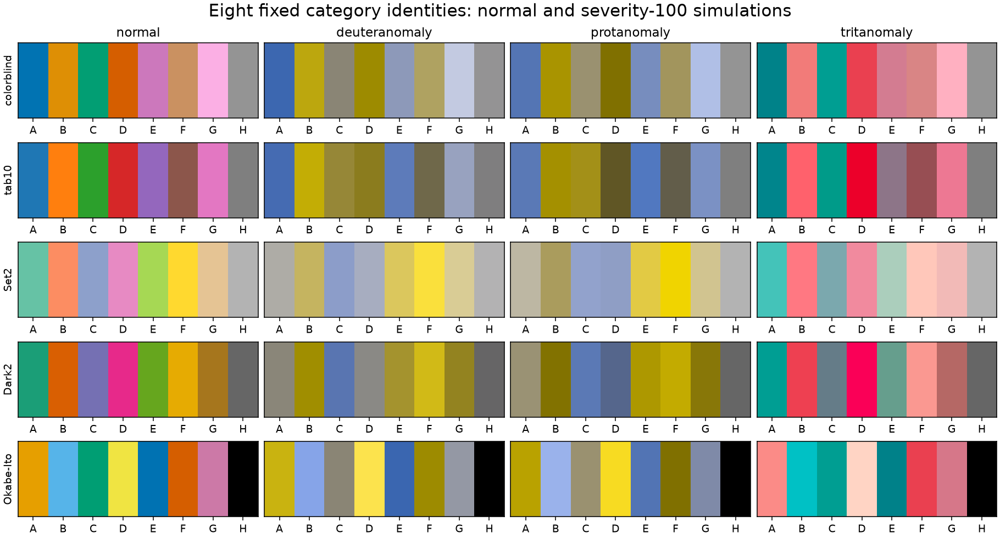
We tested Seaborn colorblind, Matplotlib tab10, ColorBrewer Set2/Dark2,
and the listed eight-color Okabe–Ito order. Three- and five-color tests use
the first colors of those fixed orders; they are not an optimization over
all possible subsets. The UI aliases are a deliberate failure control:
they duplicate colors in every theme, and four Reading themes collapse them
to a single color. They cannot encode five distinct identities.
| Eight-color cycle | Smallest pair distance, normal CAM02-UCS | Smallest pair distance across the 3 simulations | Minimum mark contrast on Atelier light paper | Colors below 3:1 there |
|---|---|---|---|---|
| colorblind | 12.99 | 5.84 | 1.65 | 5 |
| tab10 | 20.21 | 1.60 | 2.46 | 2 |
| Set2 | 17.78 | 1.86 | 1.34 | 8 |
| Dark2 | 16.74 | 2.19 | 2.00 | 2 |
| Okabe–Ito | 20.76 | 10.97 | 1.28 | 4 |
Distances describe relative separation, not a validated universal visibility threshold. The same cycle can have distinct hues and still contain marks that are too close to the background. Okabe–Ito has the strongest worst-pair result in these eight-color simulations, yet its yellow is weak on light surfaces and its black is weak on dark ones. Set2 has good dark-background contrast but poor separation for some simulated pairs. None should be branded universally safe based on this table.
The background dependence is concrete: on Atelier dark, the first three
colorblind colors have a minimum ratio of 3.12 on paper but 2.70 on panel.
The same colors and data have crossed our thin-mark screening threshold merely
by moving into a panel. Text uses the separate 4.5 normal-text screen; 3:1 here
is a mark-risk screen, not a blanket WCAG conformance judgment for charts.
Our simulations use the Machado model at severity 100 through Colorspacious, with display values clipped to sRGB after transformation; clipping fractions are retained. Alpha blending and white veiling happen before simulation. See the Colorspacious tutorial for conversion conventions. Simulated vision is evidence about possible confusions, not a substitute for readers with color-vision differences.
For ordered maps, cividis retains a lower step CV than viridis in each of the three simulations here (roughly 0.08–0.18 versus 0.24–0.45); both remain monotonic. Gamut clipping and viewing assumptions limit that comparison. It supports cividis as the common demonstration, not an absolute accessibility ranking of every possible chart.
Provisional decision: begin with small, explicitly assigned category sets;
compare colorblind and Okabe–Ito subsets on the actual surface, and always add
labels, dashes or markers. For more categories, consider panels or grouping
before adding indistinguishable colors. A future mode-specific cycle may
change shades, but must preserve category identity and avoid silently using
red for one category in light mode and another in dark. Selection remains
chart-dependent; the styles do not silently install a category cycle.
Opacity, projection and exports change the answer
Atelier dark's five-color colorblind case falls from about 3.12 minimum
mark contrast at full opacity to 1.52 at alpha 0.4 on paper. An illustrative
20% white veil lowers it to about 1.42. The veil is a simple linear-light
stress model, not a measured projector simulation. It demonstrates the loss
of contrast reserve; it does not predict a particular room.
Use opaque or sufficiently strong marks for projected lines, distinguish focus with width/shape as well as color, and test at the size at which the audience will see the chart. Scatterplot alpha can still communicate overplotting; its visual cost must be evaluated in that actual mark geometry.
The background table records map endpoints and fractions below 3:1 against paper and panel. Those values flag risk for isolated thin marks. A pale heatmap cell beside darker neighbors can remain meaningful even when its contrast against the page is low. Do not reject every continuous map by applying text rules to each cell, or trim its endpoints without rechecking lightness span and normalization.
Export with an explicit background. A transparent dark-mode chart can become unreadable when placed on a white PDF page. Keep the numeric colorbar, limits, missing-value policy and category assignment stable across SVG/PNG/PDF, light/dark mode, and SmallDocs/Quarto. Print/grayscale needs a separate check; this study measures L* but has not run physical print or projector trials.
Nine theme decisions, with both modes visible
The specimens intentionally use the same cividis magnitude map and BrBG residual map, while changing plot surfaces, text and the single-highlight example. This lets us judge whether common scientific maps can belong to each UI without tinting all data to match the brand. The line example uses direct labels and distinct dash patterns; it is a focus/context treatment, not three unordered categories.
Folio
Retain green/warm-paper furniture and a restrained green focus. Consider rust as an alternative focus, not a second universal meaning for negative values. The neutral sans chart-label role complements editorial serif prose. Compare the brand-green ramp for local ordered classes; retain cividis/viridis for continuous comparisons. BrBG feels compatible but still requires meaningful signed data. Light muted UI copy has little reserve; dark exports need their own opaque green-black canvas.
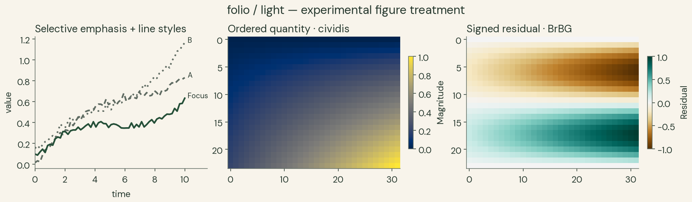
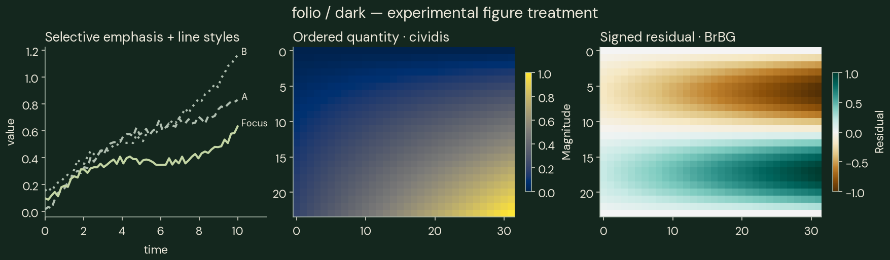
Atelier
Advance first. Teal plot furniture works with a standard magnitude map without forcing every series to teal. The light brand ramp is a credible optional ordered alternative. Use cividis/viridis by default for now, and compare BrBG/RdBu for signed quantities. Its paper/panel categorical failure above makes surface-aware category selection essential in dark mode.
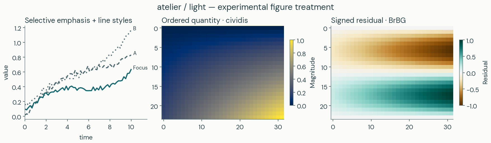
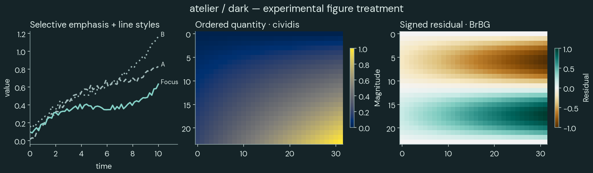
Nocturne
Keep brass scarce and use it for the intended focus. Its bright chart endpoint must not compete with many brass UI labels. The light brown and dark brass accent ramps are different mappings; do not switch them during a numerical comparison. PuOr is visually tempting but arm imbalance makes BrBG/RdBu more credible first controls. Use sans labels with the theme's serif editorial headings rather than rendering every tick in a display face.
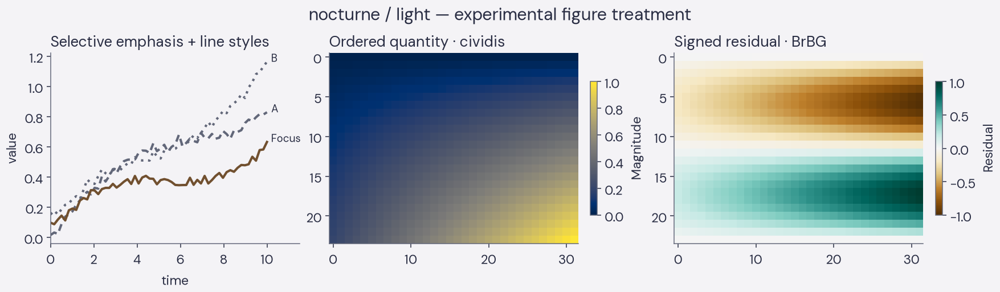
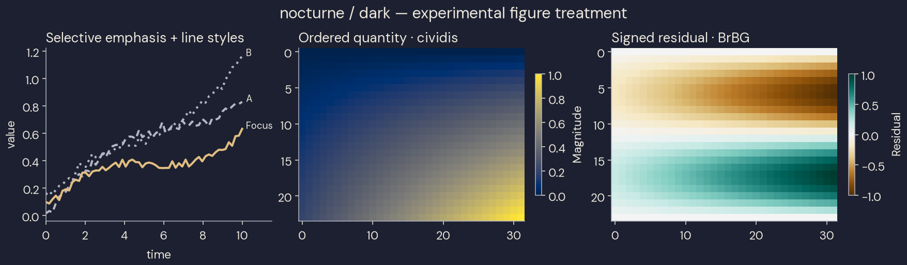
Tufte
Keep neutral furniture and let data supply color. Current accent equals ink, so the focus example intentionally remains monochrome and relies on line styles/labels. A future optional highlight should be explicitly specified. Greys is ordered but has substantially uneven steps in this sampling; neutral branding is not a reason to prefer it over a well-designed magnitude map. The figures use DejaVu Serif as a disclosed available plotting fallback for ET Book, not an exact typeface match. Remove unnecessary UI cards/shadows as a separate structural decision after selection.
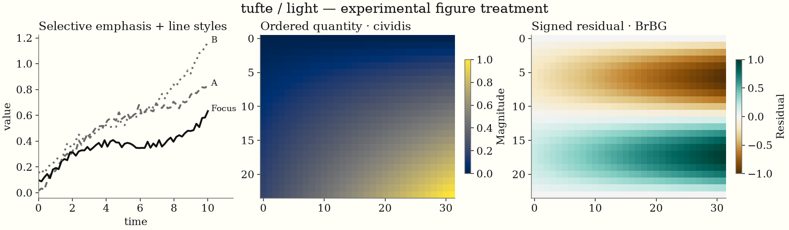
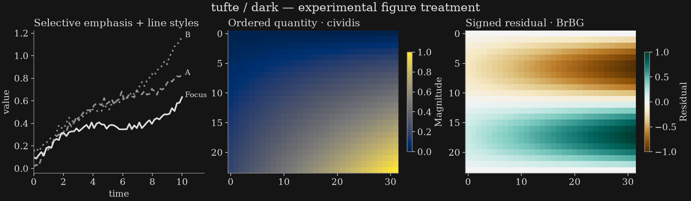
Zephyr Reading
Use Inter for chart labels and blue for deliberate focus. Blues is an ordered alternative, but its steps are less even than cividis/viridis. The dark brand ramp is narrow and less even than its light partner. Repair dark accent text on panels before exporting a full paired scheme; avoid assigning UI-blue an unrelated categorical meaning on every figure.
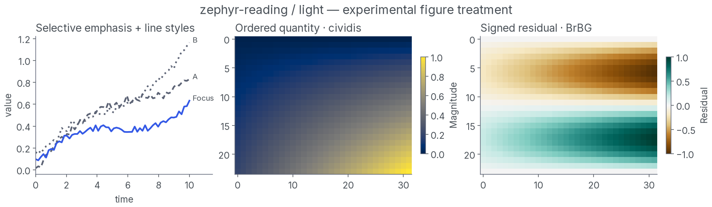
Simplex Reading
Open Sans and restrained red emphasis work well on light paper. Brand red should not automatically mean error, loss or negative residual. Prefer a neutral scientific magnitude map and deliberate divergence semantics. Dark accent text needs repair; the dark red ramp's reasonable step CV does not repair that UI defect or broaden its limited lightness span.
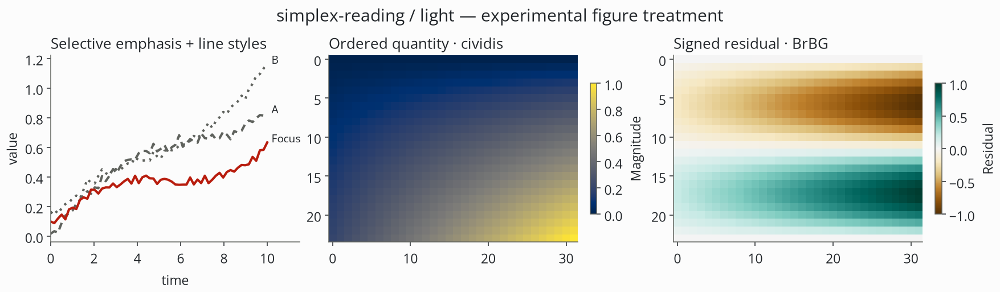
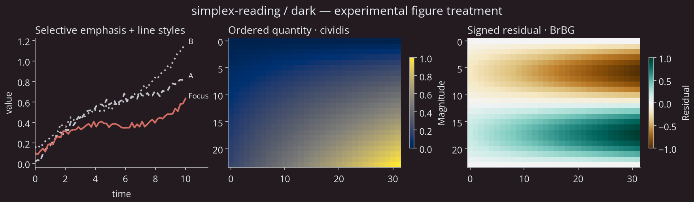
Pulse Reading
Purple is useful selective emphasis. The light brand ramp is more even than ColorBrewer Purples here, but neither should replace the broad-range baseline solely for visual fit. Compare purple/rocket options for appropriate ordered applications. The dark accent is already marginal on paper and fails on panel: repair its text role independently of the plotted scalar map.
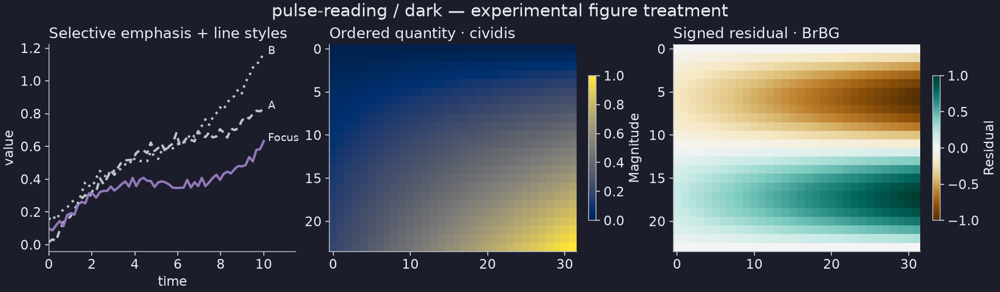
Litera Reading
Preserve the distinction between serif prose and sans chart labels. The specimens use DejaVu Sans for the portable sans role. Blue focus fits, while standard maps avoid overloading blue with every data meaning. The light brand ramp is promising in step uniformity, but its dark counterpart is narrow and the dark panel-link role still needs repair. Judge the pair independently of the source theme's strong reading layout, which htmpres does not import.
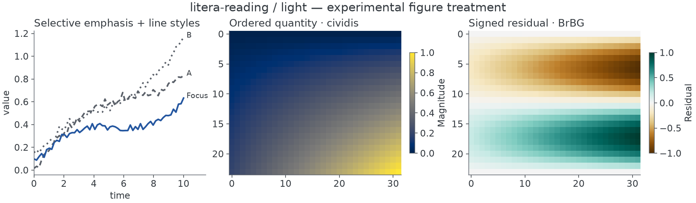
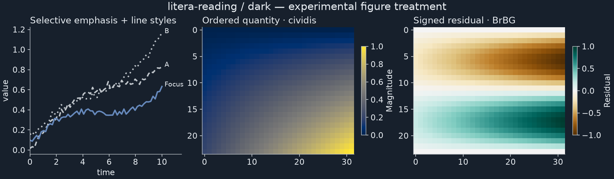
Darkly Reading
Lato and charcoal support a clear dark plot. Use the main blue focus rather than its very weak secondary blue; the present prototype does so explicitly. Test category colors on both charcoal paper and lighter panels. Validate the light adaptation as a separate design: the name “Darkly” supplies no evidence for its light mode. Preserve opaque backgrounds when exporting dark figures.
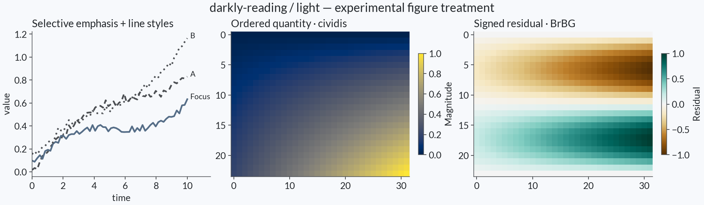
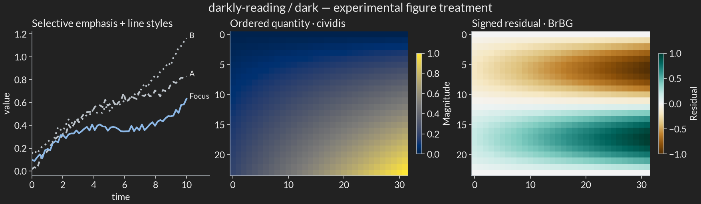
What the experimental styles provide
The candidate settings and 18 files in
styles/ specify figure/axes backgrounds, text and tick colors, font role,
quiet spines, line width and opaque exports. They do not set the global
category cycle or choose a normalization for the caller. font.size=12 in
these prototypes is a chart-layout starting point at the generated figure
size, not the final projected size; validate the placed chart after scaling.
Use Seaborn setup before the local Matplotlib style so Seaborn does not subsequently overwrite the theme. Choose data colors explicitly:
from pathlib import Path
import matplotlib.pyplot as plt
import seaborn as sns
sns.set_theme()
audit = Path("research/theme-audit")
with plt.style.context(audit / "styles/atelier-light.mplstyle"):
fig, ax = plt.subplots(figsize=(7, 4))
sns.heatmap([[0.1, 0.4], [0.7, 1.0]], cmap="cividis",
vmin=0, vmax=1, ax=ax, cbar_kws={"label": "Magnitude"})
fig.savefig("magnitude.png", dpi=180)
The experiment harness registers the repository's bundled DM Sans, Inter,
Open Sans and Lato and records resolved font hashes in
plot-fonts.json. A standalone .mplstyle names a
family but does not install/register its font; outside the harness, register
the bundled licensed files or select and disclose a fallback. Pulse/Litera
use DejaVu Sans and Tufte uses DejaVu Serif. Font availability is part of a
reproducible figure, not an incidental machine preference.
Reproduce and inspect
From the repository root:
just --justfile research/theme-audit/justfile check
just --justfile research/theme-audit/justfile specimens
just --justfile research/theme-audit/justfile serve
check creates/synchronizes the local environment from uv.lock, regenerates
measurements and scientific figures, builds the three HTML reports, and runs
focused numerical and report checks. specimens invokes the existing full
catalog smoke renderer and prepares local light/dark slides plus contact sheets.
The separate browser helper under integration_tests/theme-audit-browser.mjs
checks the report assets and the actual mode/navigation flow through CUA.
Browser screenshots are observations and require that browser step; they are
not regenerated by the numerical test command. The saved contact sheets record
this audit's observed renderings. The two private books are not required to
reproduce calculations and are not distributed.
Selection and the next implementation boundary
The provisional implementation order is Atelier, then Folio or Nocturne, with Tufte as a distinct minimal option. All five Reading alternatives remain equally investigated and eligible; select them for their specific voice rather than because they share the Reading suffix.
After selection, make one coupled contract for the selected htmpres, SmallDocs and Quarto families: surface/ink roles; accent text versus fill; text versus plot font roles; focus/context colors; explicit category assignments; sequential/diverging defaults; normalization; missing values; and export backgrounds. Keep document and projection typography profiles distinct. Reproduce native-source defects in both document renderers before changing their CSS/Sass; htmpres's derived-mode defects may belong only in its adapter.
The evidence supports a shared scientific palette policy with theme-specific furniture, plus optional tested brand ramps. It does not yet support shipping nine unrelated universal scientific palettes, silently equating UI aliases with categories, or declaring every candidate projection-ready. The remaining selection and room tests are explicit next decisions, not missing numerical work hidden by a pleasant swatch sheet.